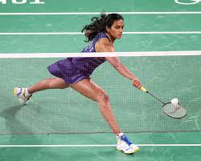
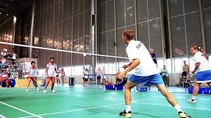

Badminton is a racket sport played using rackets to hit a shuttlecock across a net. It can be played as "singles" (with one player per side) or "doubles" (with two players per side).
Points are scored by striking the shuttlecock with the racket and landing it within the opposing side's half of the court. A rally ends once the shuttlecock strikes the ground. The unique aerodynamic properties of the shuttlecock cause it to fly differently from the balls used in most racket sports.


Badminton uses a "rally point" scoring system, meaning a point is awarded for every rally won, regardless of who served. Matches are typically played as the best-of-three games, with each game played to 21 points. If the score ties at 20-all, a side must gain a two-point lead to win.
The badminton court is rectangular and divided by a central net. Similar to tennis, it has separate boundary lines for singles (long and narrow) and doubles (short and wide for serving, long and wide for rallies).